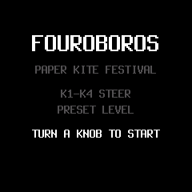
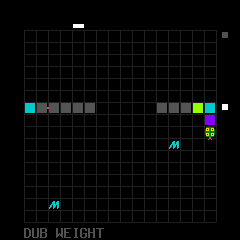

FOUROBOROS
the friendly manual · V1 · for the M-VAVE FM-1
← Back to the installerHello! What is this?
FOUROBOROS is a little game that writes music. Four snakes glide around a board inside SLOOP's visualiser. Where a snake eats, it writes notes and drum hits into SLOOP's four tracks — bass, lead, chords, drums — and SLOOP plays them. The longer a snake grows, the richer the music gets: the snake's body is the song, in order.
Good news: the snakes never die. The screen wraps around, nobody crashes, and if a snake gets as long as it can, its oldest tail notes quietly drop away to make room. Leave a snake alone for about five seconds and it steers itself. It's a garden, not an exam. 🌱
1. Installing
Everything happens on the installer page: plug in → the page checks the package checksum and asks your FM-1 who it is → Install → the page verifies the FM-1 now runs FOUROBOROS. Your FM-1 needs to be on M-VAVE's official V15 first; if it isn't, the installer's Restore section puts V15 on (it's the way onto V15 as well as the way back). Full warnings live on the installer — the short version is: don't unplug during the write.
2. First boot & getting in
After installing, your FM-1 boots into SLOOP as usual. Open the visualiser and choose style 13 · FOUROBOROS (the style picker says FOUROBOROS too). You'll land on the attract screen:

- Turn a knob to start — that's the whole doorbell.
- PRESET chooses among the 16 levels (the attract card names each one as you pass it).
- EXIT leaves the game and returns SLOOP to exactly how it was before — your edits and settings are restored byte for byte.
3. Meet the snakes & their food
Four snakes, four musical jobs: bass, lead, chords, drums. Steer with K1–K4. Food appears in fixed colours — the colours are identities, and they never change meaning:
- ■ dark purple — 808
- ■ purple — kick
- ■ pink — snare
- ■ teal — voice
- ■ lime — hat
- ■ blue — pad
What a snake eats is what it writes next. Eat, grow, and the sequence develops — that's the whole instrument.

4. The 16 levels
Every level is its own little world — its own tempo, key, groove and personality. Two badges to know: ARP levels have a built-in arpeggio layer, and HOLD levels hold your keyboard notes for you.
| # | Level | Tempo | Key |
|---|---|---|---|
| 1 | Paper Kite Festival | 128 | G major |
| 2 | Dub Weight ARP | 120 | F minor |
| 3 | Accordion in the Rain | 90 | D minor |
| 4 | Candlejar HOLD | 72 | C major |
| 5 | Something in the Walls | 78 | D minor |
| 6 | Blue Window | 82 | D minor |
| 7 | Little Ghost | 76 | C minor |
| 8 | Last Candle | 64 | C major |
| 9 | Basement Weather ARP | 90 | F major |
| 10 | Iron Garden ARP | 136 | D minor |
| 11 | Two Thumbs | 80 | C major |
| 12 | Rain on the Monorail | 172 | B minor |
| 13 | Paper Stars | 72 | C major |
| 14 | Caravan of Small Hours | 116 | E minor |
| 15 | Deep Space Bloom ARP | 64 | E major |
| 16 | Seaside Chapel HOLD | 58 | C major |
5. Sound groups A / B / C
Every level has three sound groups — three outfits for the same song. Turn the ALGORITHM knob: one click = one step (A → B → C, and back the way you came). A tiny marker beside the board shows where you are: top = A, middle = B, low = C. Changing group changes the sounds, never the pattern, the game, or the transport. Entering a level always starts on A; PLAY/STOP keeps your group; EXIT forgets it, so the next visit starts fresh on A.
6. Playing the keys
White keys play the music: full chords of the level's current harmony, with inversions as you move across the keys.
Black keys transform it: every level curates its own little set of transformations that fit its world — a ghostly level leans toward slow filters and space, a rhythmic one toward chops and stutters. Black always means transformation; what kind is the level's choice. As a piece develops (see FORM, below), deeper black-key slots wake up. Two tricks to try:
- Fill gesture: hold a white chord key and tap a black key.
- Seaside Chapel, black key 0: thunder. 🌩 One key — crack, body, a swell a moment later, and a long soft roll. (Rain, in that level's group C, is the opposite: a dark wash that always stays under the music, with five soft droplet pings per cycle.)
7. ARP & keyboard hold
Some levels carry an authored arpeggio layer (the ARP levels above), written per level and per sound group. It's deterministic — the same playing grows the same pattern — and it's simply not there on the other levels, by design. On HOLD levels (Candlejar, Seaside Chapel) the keyboard holds your notes for you. And whatever arp/hold settings you use in SLOOP itself are restored exactly when you EXIT — the game borrows nothing permanently.
8. FEEL, speed & octave
- FEEL K1 — density: how crowded the music may get.
- FEEL K2 — activity: how much food, how busy the board.
- FEEL K3 — regeneration: how quickly food returns.
- FEEL K4 — HOLD / EVOLVE: freeze the development where it is, or let it keep growing.
- SEQ speed — one ladder of eight: 0.5× · 0.75× · 1× · 1.25× · 1.5× · 2× · 4× · 8×. A fresh entry always starts at 1×.
- OCT — transpose ±2 octaves.
FEEL and speed are different knobs on purpose: speed is only the clock; FEEL is how the world behaves at that speed.
9. SAVE & KEEP — keeping what grew
- SAVE stores a section's loop so it survives. Rich six-note chords are saved with a smart four-voice voicing (the fifth drops first, then the root) — that's by design, and it's what KEEP uses too. One designed refusal: a section with the Amen profile won't SAVE — the game will tell you, and nothing is stored.
- KEEP (EDIT) takes the loop you grew into ordinary SLOOP editing (it lands in section A), so you can work on it like any SLOOP music.
- CANCEL / HOME always put things back byte for byte — nothing is ever half-applied.
- SEEDED canvases are shared, deterministic boards: the same seed grows the same canvas.
10. FORM & Motion — the piece develops
Underneath the game, each level has a form: as you keep playing, the music moves through its sections and develops — phrases answer each other, energy rises, new black-key transformations wake, and at high energy the chord voicings literally spread wider. Motion and fills follow the form, so a long session doesn't just loop — it goes somewhere, and it comes back changed. The golden rule of the design: a piece must sound good untouched; your playing deepens it, never rescues it.
11. Going back to stock
Use the installer's Restore Original FM-1 Firmware section: it installs M-VAVE's official V15 — and only that exact file, checked byte for byte in your browser before anything is written. The official firmware can't open FOUROBOROS/SLOOP projects, so back up first if there's music you love. M-VAVE's own M-UPGRADE app (on a computer) does the same job the vendor's way.
12. Troubleshooting & USB rescue
- Install stopped halfway? Don't panic — the FM-1 stays in update mode. Replug the cable and press Install again; it finishes the write.
- The page can't find the FM-1: use a data cable (some cables only charge), plug straight in (no hub), close other MIDI apps and tabs, and allow MIDI when the browser asks.
- The browser won't offer MIDI: the page must be opened from its web address (or as the installed app) in Chrome — a downloaded HTML file on Android can't use MIDI.
- FM-1 silent / won't start (running FOUROBOROS-family firmware): hold OCT− alone while switching on — USB rescue — then install again from the installer page.
- M-UPGRADE says “Failed to enter upgrade mode!”: keep it open, unplug and re-plug the USB cable, continue (M-VAVE's own remedy).
- Nothing enumerates at all, ever: the last-resort hardware route is the FM-1 Transporter dongle. Rare, documented, and very unlikely to be you.
13. Which version do I have?
Ask the installer: Step 1 reads the FM-1's identity without writing anything.
- FM-1_900 — FOUROBOROS V1 (this release, commit 04d0e62…).
- FM-1_015 — M-VAVE's official V15 (stock).
- ota-FM-1_9xx — the FM-1 is sitting in update mode; finish the install.
The exact package checksum lives on the installer page and in release-manifest.json — if the bytes don't match it, the installer simply refuses to write. That's the point. 🐍
← Back to the installerFOUROBOROS V1 · built on SLOOP/Felucca (GPL-3.0) · hardware verification pending — see the installer page.